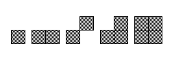
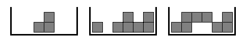
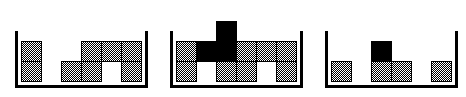
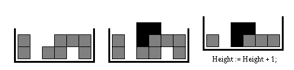
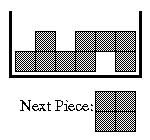
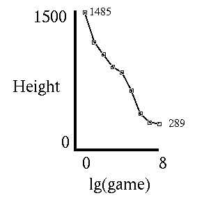

<html>
	<head>
		<title>Reinforcement Learning Tetris Example </title>
	</head>
	<body>
		<h1>Reinforcement Learning Tetris Example
		</h1>
		<p>In a previous AI life, I did some research into <a href="learning.html">reinforcement 
				learning</a>, q-learning, td-learning, etc.. Initially we wanted to use 
			these techniques to train a robot soccer team, however we soon learned that 
			these techniques were simply the wrong tool for the job. Other than Tesauro's 
			work on Backgammon we found few worthwhile applications of reinforcement 
			learning. There wasn't anything similar to our soccer problem domain. 
			Desperately stuck in the situation where we had to do something to pass this 
			course it suddenly hit me: <i>&quot;How about Tetris?&quot;</i>.
		</p>
		<h2>Motivation</h2>
		<p>Consider the game of Tetris. The player is continually given pieces of varying 
			shape that must be positioned and rotated, then dropped on the pieces below. 
			Since these pieces begin to pile up, the player must try to stack them 
			efficiently. Furthermore, if the player manages to complete a row, then that 
			row dissapears thus freeing up more space. The objective is to keep the height 
			as low as possible. Note that the shape of each subsequent piece is random thus 
			making it difficult to plan ahead (non-deterministic).
		</p>
		<p>People who play many hours of this addicting game, will likely develop 
			strategies for playing. For example, they may try to fill up the corners and 
			single-wide spaces first, while avoiding the situation where free spaces get 
			covered by objects on top thus becoming unaccessable.
		</p>
		<p>We tested to see if an agent could learn to play tetris without giving it 
			heuristics or directly programming its strategies. The guts of the agent is a 
			utility function (or evaluation function) that indicates a value for a 
			configuration of pieces (state). When the agent is given a random piece to add, 
			it evaluates all the valid placements and chooses the action that results in 
			the best configuration (according to the utility function). This architecture 
			is very similar to what Tesauro used for TD-Gammon. Unlike Tesauro's neural 
			network structure, we used a table to represent our utility function. This 
			table is initially set to 0 for all input states. It is up to the agent to 
			learn this table as it places the tetris pieces (i.e. as it moves from state to 
			state).
		</p>
		<h2>Smaller Version of Game</h2>
		<p>For our experiments we used a smaller <a href="tetris.cpp">implementation</a> of 
			the Tetris game. The pieces are at most 2x2:
		</p>
		<p class="MsoNormal" align="center" style='text-align:center'></p>
		<p><br>
			The area where pieces are placed is 6 units wide, and the maximum working 
			height is 2. Some examples of states are:</p>
		<p class="MsoNormal" align="center" style='text-align:center'></p>
		<p><br>
			As in the regular game of tetris, rows are removed when they become full. The 
			following picture (going left to right) shows how this happens when a piece is 
			added:</p>
		<p class="MsoNormal" align="center" style='text-align:center'></p>
		<p><br>
			When the working height of 2 is exceeded, the bottom row is removed and the 
			total height (agent's score for this game) is incremented:
		</p>
		<p class="MsoNormal" align="center" style='text-align:center'></p>
		<p><br>
			Our games consisted of 10000 pieces each. Even though the game parameters are 
			reduced, the size of our table (number of states) is 2^(6*2)=4096 which is 
			rather big (but manageable).
		</p>
		<p>An example of a state that should have a low utility value is:</p>
		<p class="MsoNormal" align="center" style='text-align:center'></p>
		<p><br>
			Given the next piece is a solid 2x2 block, the agent will be forced to increase 
			the total height of the pile by 2 units. Therefore it is desirable to avoid 
			getting into states like these.
		</p>
		<h2>Implementation and Results
		</h2>
		<p>Using reinforcement learning the agent adapted the utility function and 
			dramatically improved its performance as it played a number of games. The 
			following table and plot show the improvement in agents score (total height) 
			over a number of 10000 piece games:
		</p>
		<table class="MsoNormalTable" border="0" cellpadding="0" style='mso-cellspacing:1.5pt'>
			<tr style='mso-yfti-irow:0;mso-yfti-lastrow:yes'>
				<td style='padding:.75pt .75pt .75pt .75pt'>
					<p class="MsoNormal" align="center" style='text-align:center'></p>
					<p class="MsoNormal"><o:p>&nbsp;</o:p></p>
				</td>
				<td style='padding:.75pt .75pt .75pt .75pt'><pre><o:p>&nbsp;</o:p></pre>
					<pre><span style='mso-spacerun:yes'>&nbsp; </span>Game<span style='mso-spacerun:yes'>&nbsp; </span>Score </pre>
					<pre><span style='mso-spacerun:yes'>&nbsp;&nbsp;</span>------------</pre>
					<pre><span style='mso-spacerun:yes'>&nbsp;&nbsp;&nbsp;&nbsp; </span>1<span style='mso-spacerun:yes'>&nbsp;&nbsp; </span>1485 </pre>
					<pre><span style='mso-spacerun:yes'>&nbsp;&nbsp;&nbsp;&nbsp;&nbsp;</span>2<span style='mso-spacerun:yes'>&nbsp;&nbsp; </span>1166 </pre>
					<pre><span style='mso-spacerun:yes'>&nbsp;&nbsp;&nbsp;&nbsp;&nbsp;</span>4<span style='mso-spacerun:yes'>&nbsp;&nbsp; </span>1032 </pre>
					<pre><span style='mso-spacerun:yes'>&nbsp;&nbsp;&nbsp;&nbsp;&nbsp;</span>8<span style='mso-spacerun:yes'>&nbsp;&nbsp;&nbsp; </span>902 </pre>
					<pre><span style='mso-spacerun:yes'>&nbsp;&nbsp;&nbsp;&nbsp;</span>16<span style='mso-spacerun:yes'>&nbsp;&nbsp;&nbsp; </span>837 </pre>
					<pre><span style='mso-spacerun:yes'>&nbsp;&nbsp;&nbsp;&nbsp;</span>32<span style='mso-spacerun:yes'>&nbsp;&nbsp;&nbsp; </span>644 </pre>
					<pre><span style='mso-spacerun:yes'>&nbsp;&nbsp;&nbsp;&nbsp;</span>64<span style='mso-spacerun:yes'>&nbsp;&nbsp;&nbsp; </span>395 </pre>
					<pre><span style='mso-spacerun:yes'>&nbsp;&nbsp;&nbsp;</span>128<span style='mso-spacerun:yes'>&nbsp;&nbsp;&nbsp; </span>303 </pre>
					<pre><span style='mso-spacerun:yes'>&nbsp;&nbsp;&nbsp;</span>256<span style='mso-spacerun:yes'>&nbsp;&nbsp;&nbsp; </span>289 </pre>
				</td>
			</tr>
		</table>
		<p class="MsoNormal">Note that the a lower score is better than a higher score. To 
			keep the table short only game numbers that are an even power of 2 were 
			reported.
		</p>
		<p>The agent used the following incremental learning update rule: <code>
				<span style='font-size:10.0pt'>
					<o:p></o:p>
				</span></code></p>
		<pre><o:p>&nbsp;</o:p></pre>
		<pre><span style='mso-tab-count:1'>&nbsp;&nbsp;&nbsp;&nbsp;&nbsp;&nbsp;&nbsp; </span>U(state) = U(state)*(1-alpha) + (reward+gamma*U(nextstate))*alpha</pre>
		<p class="MsoNormal">Where U() is the utility function table. The agent is 
			penalized with a reward of -100 for each level it goes above the working 
			height, otherwise reward is set to 0. The intuition behind using a discount 
			factor, gamma &lt; 1.0, is because even though we may eventually have to 
			position a piece that puts us above the working height it is best to avoid that 
			situation as long as possible. Furthermore, a discount factor bounds the 
			utility values which could otherwise go to positive or negative infinity. Using 
			incremental learning (alpha<code><span style='font-size:10.0pt'><o:p></o:p>
				</span></code></p>
		<1.0) instead of just making the direct assignment: ><pre><o:p>&nbsp;</o:p></pre>
		<pre><span
style='mso-tab-count:1'>&nbsp;&nbsp;&nbsp;&nbsp;&nbsp;&nbsp;&nbsp; </span>U(state) = reward + gamma*U(nextstate)</pre>
		<p class="MsoNormal">is necessary because of the non-deterministic element (the 
			shape of the next piece is random) in the Tetris environment.
		</p>
		<h2>Attempted Learning Enhancements
		</h2>
		<p class="MsoNormal">Ideally the value of alpha should be decreased over time to 
			help converge the utility values. Without a strategy for migrating alpha we 
			simply used a smaller constant value of 0.02. This turned out to be a fairly 
			good choice as we later tried some other values for comparison: <code>
				<span style='font-size:10.0pt'>
					<o:p></o:p>
				</span></code></p>
		<pre><o:p>&nbsp;</o:p></pre>
		<pre><span style='mso-tab-count:1'>&nbsp;&nbsp;&nbsp;&nbsp;&nbsp;&nbsp;&nbsp; </span><span style='mso-spacerun:yes'>&nbsp;&nbsp;&nbsp;&nbsp;&nbsp;&nbsp;&nbsp; </span>value of Alpha</pre>
		<pre><span
style='mso-tab-count:1'>&nbsp;&nbsp;&nbsp;&nbsp;&nbsp;&nbsp;&nbsp; </span>Game<span style='mso-spacerun:yes'>&nbsp; </span>0.002<span style='mso-spacerun:yes'>&nbsp; </span>0.02<span style='mso-spacerun:yes'>&nbsp;&nbsp; </span>0.2</pre>
		<pre><span
style='mso-tab-count:1'>&nbsp;&nbsp;&nbsp;&nbsp;&nbsp;&nbsp;&nbsp; </span>-------------------------</pre>
		<pre><span
style='mso-tab-count:1'>&nbsp;&nbsp;&nbsp;&nbsp;&nbsp;&nbsp;&nbsp; </span><span style='mso-spacerun:yes'>&nbsp;&nbsp; </span>1<span style='mso-spacerun:yes'>&nbsp;&nbsp; </span>1451<span style='mso-spacerun:yes'>&nbsp; </span>1485<span style='mso-spacerun:yes'>&nbsp; </span>1404</pre>
		<pre><span
style='mso-tab-count:1'>&nbsp;&nbsp;&nbsp;&nbsp;&nbsp;&nbsp;&nbsp; </span><span style='mso-spacerun:yes'>&nbsp;&nbsp; </span>2<span style='mso-spacerun:yes'>&nbsp;&nbsp; </span>1204<span style='mso-spacerun:yes'>&nbsp; </span>1166<span style='mso-spacerun:yes'>&nbsp; </span>1043</pre>
		<pre><span
style='mso-tab-count:1'>&nbsp;&nbsp;&nbsp;&nbsp;&nbsp;&nbsp;&nbsp; </span><span style='mso-spacerun:yes'>&nbsp;&nbsp; </span>4<span style='mso-spacerun:yes'>&nbsp;&nbsp; </span>1043<span style='mso-spacerun:yes'>&nbsp; </span>1032<span style='mso-spacerun:yes'>&nbsp;&nbsp; </span>752</pre>
		<pre><span
style='mso-tab-count:1'>&nbsp;&nbsp;&nbsp;&nbsp;&nbsp;&nbsp;&nbsp; </span><span style='mso-spacerun:yes'>&nbsp;&nbsp; </span>8<span style='mso-spacerun:yes'>&nbsp;&nbsp;&nbsp; </span>971<span style='mso-spacerun:yes'>&nbsp;&nbsp; </span>902<span style='mso-spacerun:yes'>&nbsp;&nbsp; </span>525</pre>
		<pre><span
style='mso-tab-count:1'>&nbsp;&nbsp;&nbsp;&nbsp;&nbsp;&nbsp;&nbsp; </span><span style='mso-spacerun:yes'>&nbsp; </span>16<span style='mso-spacerun:yes'>&nbsp;&nbsp;&nbsp; </span>938<span style='mso-spacerun:yes'>&nbsp;&nbsp; </span>837<span style='mso-spacerun:yes'>&nbsp;&nbsp; </span>420</pre>
		<pre><span
style='mso-tab-count:1'>&nbsp;&nbsp;&nbsp;&nbsp;&nbsp;&nbsp;&nbsp; </span><span style='mso-spacerun:yes'>&nbsp; </span>32<span style='mso-spacerun:yes'>&nbsp;&nbsp;&nbsp; </span>912<span style='mso-spacerun:yes'>&nbsp;&nbsp; </span>644<span style='mso-spacerun:yes'>&nbsp;&nbsp; </span>370</pre>
		<pre><span
style='mso-tab-count:1'>&nbsp;&nbsp;&nbsp;&nbsp;&nbsp;&nbsp;&nbsp; </span><span style='mso-spacerun:yes'>&nbsp; </span>64<span style='mso-spacerun:yes'>&nbsp;&nbsp;&nbsp; </span>955<span style='mso-spacerun:yes'>&nbsp;&nbsp; </span>395<span style='mso-spacerun:yes'>&nbsp;&nbsp; </span>342</pre>
		<pre><span
style='mso-tab-count:1'>&nbsp;&nbsp;&nbsp;&nbsp;&nbsp;&nbsp;&nbsp; </span> 128<span style='mso-spacerun:yes'>&nbsp;&nbsp;&nbsp; </span>848<span style='mso-spacerun:yes'>&nbsp;&nbsp; </span>303<span style='mso-spacerun:yes'>&nbsp;&nbsp; </span>339</pre>
		<pre><span
style='mso-tab-count:1'>&nbsp;&nbsp;&nbsp;&nbsp;&nbsp;&nbsp;&nbsp; </span> 256<span style='mso-spacerun:yes'>&nbsp;&nbsp;&nbsp; </span>679<span style='mso-spacerun:yes'>&nbsp;&nbsp; </span>289<span style='mso-spacerun:yes'>&nbsp;&nbsp; </span>351</pre>
		<p class="MsoNormal">Learning is clearly slower with the lower alpha value of 
			0.002. Using the higher value (0.2) learns quicker at first but doesn't 
			eventually reach the performance achieved by setting alpha to 0.02.
		</p>
		<p>Using only the adjacent state update rule (instead of the extended TD learning 
			update rule) was sufficient for the Tetris learner. This is because we were 
			able to apply penalties more frequently (every time the blocks stack too high). 
			Whereas, a backgammon game, which consists of many moves, must be completed 
			before the reward/penalty is applied. Furthermore, Tesauro used backpropogation 
			neural networks which are notoriously slow to train. We experimented with using 
			TD learning for learning Tetris. The following table shows compares our 
			previous results with a TD enhanced version of our agent. <code>
				<span style='font-size:10.0pt'>
					<o:p></o:p>
				</span></code></p>
		<pre><o:p>&nbsp;</o:p></pre>
		<pre><span style='mso-tab-count:1'>&nbsp;&nbsp;&nbsp;&nbsp;&nbsp;&nbsp;&nbsp; </span>Game<span style='mso-spacerun:yes'>&nbsp;&nbsp;&nbsp;&nbsp; </span>Q<span style='mso-spacerun:yes'>&nbsp;&nbsp;&nbsp; </span>TD</pre>
		<pre><span
style='mso-tab-count:1'>&nbsp;&nbsp;&nbsp;&nbsp;&nbsp;&nbsp;&nbsp; </span>-------------------</pre>
		<pre><span
style='mso-tab-count:1'>&nbsp;&nbsp;&nbsp;&nbsp;&nbsp;&nbsp;&nbsp; </span><span style='mso-spacerun:yes'>&nbsp;&nbsp; </span>1<span style='mso-spacerun:yes'>&nbsp;&nbsp; </span>1485<span style='mso-spacerun:yes'>&nbsp; </span>1520</pre>
		<pre><span
style='mso-tab-count:1'>&nbsp;&nbsp;&nbsp;&nbsp;&nbsp;&nbsp;&nbsp; </span><span style='mso-spacerun:yes'>&nbsp;&nbsp; </span>2<span style='mso-spacerun:yes'>&nbsp;&nbsp; </span>1166<span style='mso-spacerun:yes'>&nbsp; </span>1182</pre>
		<pre><span
style='mso-tab-count:1'>&nbsp;&nbsp;&nbsp;&nbsp;&nbsp;&nbsp;&nbsp; </span><span style='mso-spacerun:yes'>&nbsp;&nbsp; </span>4<span style='mso-spacerun:yes'>&nbsp;&nbsp; </span>1032<span style='mso-spacerun:yes'>&nbsp; </span>1000</pre>
		<pre><span
style='mso-tab-count:1'>&nbsp;&nbsp;&nbsp;&nbsp;&nbsp;&nbsp;&nbsp; </span><span style='mso-spacerun:yes'>&nbsp;&nbsp; </span>8<span style='mso-spacerun:yes'>&nbsp;&nbsp;&nbsp; </span>902<span style='mso-spacerun:yes'>&nbsp;&nbsp; </span>903</pre>
		<pre><span
style='mso-tab-count:1'>&nbsp;&nbsp;&nbsp;&nbsp;&nbsp;&nbsp;&nbsp; </span><span style='mso-spacerun:yes'>&nbsp; </span>16<span style='mso-spacerun:yes'>&nbsp;&nbsp;&nbsp; </span>837<span style='mso-spacerun:yes'>&nbsp;&nbsp; </span>855</pre>
		<pre><span
style='mso-tab-count:1'>&nbsp;&nbsp;&nbsp;&nbsp;&nbsp;&nbsp;&nbsp; </span><span style='mso-spacerun:yes'>&nbsp; </span>32<span style='mso-spacerun:yes'>&nbsp;&nbsp;&nbsp; </span>644<span style='mso-spacerun:yes'>&nbsp;&nbsp; </span>635</pre>
		<pre><span
style='mso-tab-count:1'>&nbsp;&nbsp;&nbsp;&nbsp;&nbsp;&nbsp;&nbsp; </span><span style='mso-spacerun:yes'>&nbsp; </span>64<span style='mso-spacerun:yes'>&nbsp;&nbsp;&nbsp; </span>395<span style='mso-spacerun:yes'>&nbsp;&nbsp; </span>394</pre>
		<pre><span
style='mso-tab-count:1'>&nbsp;&nbsp;&nbsp;&nbsp;&nbsp;&nbsp;&nbsp; </span> 128<span style='mso-spacerun:yes'>&nbsp;&nbsp;&nbsp; </span>303<span style='mso-spacerun:yes'>&nbsp;&nbsp; </span>289</pre>
		<pre><span
style='mso-tab-count:1'>&nbsp;&nbsp;&nbsp;&nbsp;&nbsp;&nbsp;&nbsp; </span> 256<span style='mso-spacerun:yes'>&nbsp;&nbsp;&nbsp; </span>289<span style='mso-spacerun:yes'>&nbsp;&nbsp; </span>256</pre>
		<p class="MsoNormal">As the results show, we were unable to achieve any significant 
			improvement in learning. This is understandable since in our Tetris environment 
			the effects of actions are realized sooner and actions do not have lasting 
			consequences. Given the different types of pieces, and all the possible 
			placements of them, from a state there can be up to 52 possible next states. 
			Its possible to get from any state to most others in 3 moves. TD learning is 
			more likely to improve learning in an environment with more states and a lower 
			branching factor.
		</p>
		<h2>Future Work
		</h2>
		<p class="MsoNormal">In most learning situations, an agent must decided whether to 
			choose what it thinks is the best action, or explore a different action in the 
			hopes of finding a better solution. It almost seems odd that our Tetris agent 
			is able to continually improve performance even though it only chooses the best 
			action. An explanation of this is that this game is a &quot;losing 
			battle&quot;. Utility values are initially set to 0 and tend to move downward. 
			Nonetheless, we believe that adding an exploration strategy would provide some 
			benefit.
		</p>
		<p>As mentioned earlier, this size of game we were experimenting with was smaller 
			than the regular version of Tetris. The biggest problem with scaling upward is 
			that the utility table is exponential in size compared to the working area 
			(game board). For a full sized game, an alternative implementation of the 
			utility function, such as a neural network, would have to be used.
		</p>
		<h2>Conclusion</h2>
		<p>In conclusion, reinforcement learning techniques work extremely well for 
			training agents to play Tetris-like games efficiently. We were able to tackle 
			this problem in a way that was very similar to the approach taken by Tesauro's 
			backgammon work, which is the most frequently (if not the only) mentioned 
			application of reinforcement learning. An example that is often used to explain 
			reinforcement learning is tic-tac-toe. One problem with using this as a 
			learning example is that it is much better solved with simple minimax search. 
			The small state space search problem in the Russell/Norvig AI textbook, which 
			was fabricated to explain learning algorithms, also fails to inspire practical 
			applications of this technology. In the famous cart-pole balancing problem 
			(also known as the inverted pendulum), the task that is learned is a very 
			simple reflex reaction. Our Tetris example shows a straightforward 
			reinforcement learning solution to a well known and reasonably sized problem 
			where there isn't a much more obvious and better solution that should be used 
			instead.
		</p>
		<p>Thus we have accomplished the goal of AI research: <i>Finding a problem to fit the 
				solution!</i>
		</p>
		<hr>
		<p>S Melax</p>
	</body>
</html>
